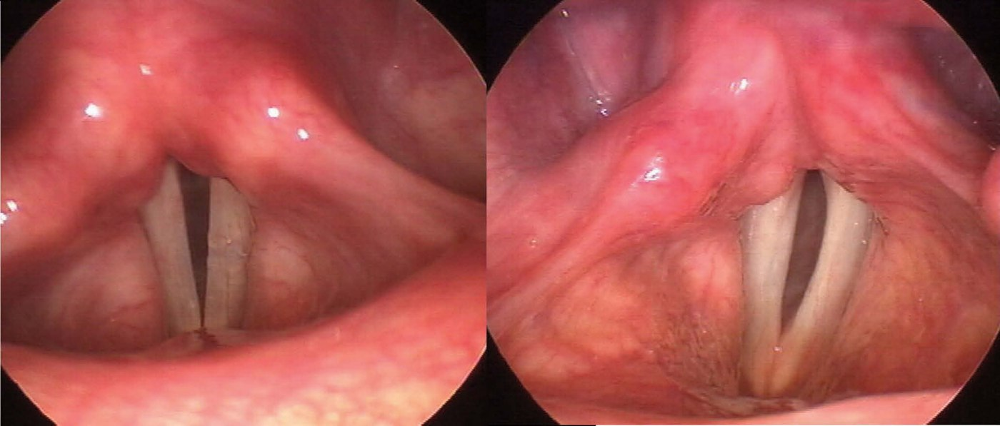

Сверка с PDF рубрикатора выполняется…
Парезы и параличи гортани
Клинические рекомендации от 07.10.2026 · взрослые и дети
Основные положения
- Парез гортани: нарушение подвижности мышц гортани из-за нарушения иннервации до 6 месяцев; паралич — более 6 месяцев. Чаще всего — после операций на щитовидной железе.
- Диагноз ставят ларингоскопически: голосовая складка неподвижна или резко ограничена в подвижности. Для поиска причины — КТ шеи и грудной клетки, УЗИ гортани и шеи, эндокринолог и невролог.
- Одностороннее поражение: как можно раньше логопедическая коррекция голоса, у взрослых в ранние сроки — антихолинэстеразные препараты и витамины группы B; реконструктивная операция — после 6 месяцев. Двустороннее с декомпенсацией дыхания — трахеотомия или хордопексия.
- Срочная госпитализация — паралитический стеноз гортани в стадии субкомпенсации и декомпенсации; плановая — для операции.
Коды МКБ-10
Клиническая картина и классификация
Определение
- парез гортани: временное, до 6 месяцев, отсутствие или ограничение подвижности мышц гортани вследствие нарушения иннервации;
- паралич гортани: длительное, более 6 месяцев, отсутствие подвижности мышц гортани.
Этиология
- операции на щитовидной и околощитовидных железах — 72,4%;
- операции при атеросклерозе сонных артерий, раке лёгкого, врождённых пороках сердца — 7,2%;
- новообразования со сдавлением возвратного нерва: рак щитовидной железы, лёгкого, пищевода, метастазы в лимфоузлы средостения — 6,8%;
- операции на шейном отделе позвоночника, травма, опухоли мозга, инсульт, демиелинизирующая нейропатия — 5,7%;
- перенесённая ОРИ, туберкулёз лёгких — 4,5%;
- причина не установлена (идиопатический) — 3,4%.
- хирургическая травма — 44%;
- злокачественные новообразования — 17%;
- эндотрахеальная интубация — 15%;
- неврологические заболевания — 12%;
- причина неизвестна — 12%.
Центральные параличи (10%): надъядерные (кортикальные, кортикобульбарные) и бульбарные — при нарушении мозгового кровообращения, опухолях, черепно-мозговой травме, менингоэнцефалите, полиомиелите, ДЦП, рассеянном склерозе, после операций на мозге. Функциональные центральные — при нервно-психических расстройствах, чаще при истерии.
- новообразования — 29%;
- послеоперационные осложнения — 24%;
- воспалительные процессы — 21%;
- постинтубационная и наружная травма — 8%;
- центральные — 5%, идиопатические — 13%.
Повреждение возвратного нерва при кардиохирургии — до 4%; закрытие артериального (боталлова) протока у новорождённых массой менее 1000 г часто даёт паралич левого возвратного нерва: стридор, осиплость, трудности кормления, аспирация.
Классификация
- по уровню поражения блуждающего нерва: центральные, периферические;
- по этиологии: врождённые, приобретённые;
- по распространённости: односторонние, двусторонние.
Клиническая картина
Страдают все функции гортани: разделительная (защитная), голосовая (охриплость), дыхательная (стеноз или гипервентиляция). Картина зависит прежде всего от положения парализованной складки.
Положение складки у взрослых- срединное;
- парамедианное: 2 мм от срединной линии;
- интермедианное: 4 мм;
- латеральное: максимальное отведение на глубоком вдохе.
Паралич левой голосовой складки после операции на шейном отделе позвоночника передним доступом

Проявления по положению голосовых складок раздел 1.6 КР
| Поражение | Положение складки | Проявления |
|---|---|---|
| Одностороннее | медианное, парамедианное | дисфония небольшая; одышка только при нагрузке или избыточной массе; дисфагии нет |
| Одностороннее | интермедианное, латеральное | дисфония вплоть до афонии; одышки при нагрузке нет, но гипервентиляция; трудно откашляться, поперхивание; латеральное — при полном поражении блуждающего нерва |
| Двустороннее | латеральное | нарушение разделительной функции, афония, невозможность откашляться, гипервентиляция (головокружение при нагрузке и разговоре) |
| Двустороннее | интермедианное, парамедианное, медианное | на первый план — дыхательная недостаточность; голос может быть звучным, разделительная функция сохранена |
Стадии паралитического стеноза гортани раздел 1.6 КР
| Стадия стеноза | Голосовая щель у взрослых | Признаки |
|---|---|---|
| Компенсация | 6–8 мм | одышки в покое нет, появляется при ходьбе |
| Субкомпенсация | 3–4 мм | инспираторная одышка, при нагрузке — вспомогательные мышцы, втяжение межрёберий и ямок, стридор, бледность; давление нормальное или повышено |
| Декомпенсация | 2–3 мм | частое поверхностное дыхание, резкий стридор, вынужденное положение сидя, бледно-синюшное лицо, потливость, акроцианоз, нитевидный пульс, давление снижено |
| Асфиксия | 1 мм | дыхание Чейна — Стокса или остановка, угнетение сердечной деятельности, потеря сознания, непроизвольные мочеиспускание и дефекация, остановка сердца |
Неплотное смыкание складок и ротация черпаловидного хряща ведут к аспирации (поперхиванию); одышка усиливается при голосовой нагрузке.
Последствия аспирации- ларингит;
- трахеит;
- аспирационная пневмония.
- сердечно-сосудистые и лёгочные заболевания;
- эндокринные: гипотиреоз, гипопаратиреоз;
- деформация шейного и грудного отделов позвоночника.
В учебнике: заболевания гортани. Анатомия и физиология: гортань.
Диагностика
- анамнез: травма или операция на шее, органах средостения, шейном отделе позвоночника, головном мозге; инфекционные заболевания;
- жалобы: дисфония, афония, дисфагия, одышка;
- осмотр и пальпация гортани, оценка дыхания, признаки стеноза;
- непрямая ларингоскопия, фиброларингоскопия, видеоларингоскопия, микроларингоскопия.
Жалобы и анамнез
- одностороннее поражение: утомляемость голоса, придыхание, одышка при нагрузке, аспирация жидкостью; возможна дисфагия;
- двустороннее: нарушение дыхания, инспираторный стридор при нагрузке, во сне, при разговоре.
Ларингоспазм может быть следствием синкинезии — неправильной реиннервации, когда на вдохе сокращаются суживающие мышцы; а также рефлюкса, гипокальциемии, аллергии, неврологических и психических расстройств.
Дыхательные нарушения при истерии: шумное стридорозное дыхание днём при посторонних, свободнее, когда пациент отвлекается, во сне — спокойное. Трахеотомия противопоказана, лечение — в психоневрологическом стационаре.
- односторонний паралич: осиплость — 100% (в первый месяц может быть афония), затем аспирация при кормлении, стридор — около 36%;
- двусторонний: инспираторный или двухфазный высокотональный стридор — 100%, усиливается при нагрузке, в 30% исчезает во сне; стеноз I–III степени.
Осмотр
- все с подозрением на паралич гортани: осмотр оториноларинголога, пальпация шеи и регионарных лимфоузлов — воспаление, опухоль, травма.
- I степень: одышка при умеренной нагрузке;
- II: при малой нагрузке;
- III: в покое.
Оценивают также рубцы на шее (сращение кожи с трахеей нарушает подвижность гортани) и неврологические признаки: асимметрию нёба, языка, фасцикуляции языка.
Подозрение на острое воспаление ЛОР-органов: развёрнутый общий анализ крови.
Ларингоскопия
- все с подозрением на парез или паралич: эндоскопическая ларингоскопия — микроларингоскопия, стробоскопия, видео- и фиброларингоскопия.
Непрямая ларингоскопия обязательна с 12 лет; у дошкольников и младших школьников — видеофиброларингоскопия или фиброларингоскопия («золотой стандарт» у детей).
Диагностические признаки- неподвижность или резкое ограничение подвижности одной или обеих складок, черпаловидный хрящ ограниченно подвижен или неподвижен;
- при фонации щель между складками: овальная, линейная, треугольная; здоровая складка может заходить за среднюю линию;
- парализованная складка укорочена, атрофична: вогнутый серповидный край, истончение, выступающий голосовой отросток, складка ниже здоровой;
- черпаловидный хрящ наклонён вперёд, ротирован медиально.
- перихондрит (артрит) перстнечерпаловидного сустава: отёк, инфильтрация, гиперемия;
- анкилоз: хрящ полностью неподвижен;
- вывих: асимметрия суставов, воспаление, нетипичное положение хряща;
- новообразования, ведущие к неподвижности складки.
Гипертрофия вестибулярных складок — компенсаторная, операции не требует.
У плачущего ребёнка складки сомкнуты, что имитирует двусторонний паралич: дождаться адекватного вдоха с разведением складок, которого при двустороннем параличе не будет.
Картина гортани в норме при непрямой ларингоскопии

Паралич левой голосовой складки

КТ, рентгенография, УЗИ
- все пациенты с парезом или параличом: КТ верхних дыхательных путей и шеи; если КТ недоступна — рентгенография гортани или шейного отдела позвоночника в двух проекциях;
- подозрение на новообразование: КТ с контрастированием.
КТ верхних дыхательных путей и шеи с контрастным усилением — при подозрении на новообразование.
Всем: КТ органов грудной полости — поиск объёмных образований.
Всем: УЗИ гортани и лимфатических узлов шеи — поиск объёмных образований.
Эндокринолог и невролог — поиск причины и выбор лечения; при подозрении на другие причины — пульмонолог, гастроэнтеролог, онколог.
Лечение
Медикаментозное лечение
Лечение основного заболевания в сочетании с антихолинэстеразными препаратами, стимулирующими нервно-мышечную передачу. Детям до 18 лет препараты противопоказаны.
Взрослые- неостигмина метилсульфатoff-label в ранние сроки: внутрь 0,015 г 2 раза в день или 1 мл 0,05% раствора подкожно 1–2 раза в день, 2 недели;
- ипидакринoff-label при одностороннем параличе: в/м 1 мл (15 мг) 1 раз в день 10 дней, затем 20 мг внутрь 3 раза в день (в КР «45 дней месяца»).
Ипидакринoff-label у взрослых с односторонним параличом — для восстановления подвижности парализованной складки.
Взрослые в ранние сроки: витамин B1 в комбинации с B6 и (или) B12. Учитывать противопоказания при онкологических заболеваниях; детям до 18 лет не назначают.
Логопедическая коррекция и физиотерапия
- взрослые и дети с односторонним параличом: индивидуальная программа логопеда в самые ранние сроки — до окончания обследования и медикаментозного лечения.
Здоровая складка компенсаторно заходит за среднюю линию и смыкается с неподвижной. Три этапа; на каждом — дыхание, тонус и подвижность гортани, высота, сила и тембр голоса. Начинают при отсутствии боли в ране и острого воспаления.
Программа логопедической реабилитации — всем пациентам с параличом гортани, в том числе после операции.
Всем: консультация физиотерапевта — улучшение трофики и нервно-мышечной передачи.
Хирургическое лечение у взрослых
Операции у взрослых раздел 3.3 КР
| Ситуация | Операция |
|---|---|
| двусторонний паралич, декомпенсация дыхания | трахеотомия |
| двусторонний паралич, декомпенсация, до 6 месяцев от поражения | временная хордопексия (латерофиксация складки) |
| двусторонний паралич, более 6 месяцев | двусторонняя хордопексия |
| двусторонний паралич, дыхание через естественные пути невозможно, консервативное лечение неэффективно более 6 месяцев | микроэндоларингеальная резекция с эндоскопическими и лазерными технологиями, пластика гортани |
| двусторонний и односторонний паралич | реиннервация и функциональная пластика гортани и трахеи микрохирургически |
| односторонний паралич, более 6 месяцев | эндоларингеальное реконструктивное вмешательство на складках с имплантами — восстановление голоса |
Пластика и резекция гортани не показаны при двустороннем параличе из-за неоперабельных опухолей щитовидной железы, лёгких, пищевода, метастазов в средостение: при декомпенсации — трахеотомия.
Хирургическое лечение у детей
Операции у детей раздел 3.4 КР
| Ситуация | Операция |
|---|---|
| врождённый и приобретённый двусторонний паралич, декомпенсация дыхания | трахеотомия |
| дети старше 4 лет, двусторонний паралич, субкомпенсация, трахеостомы нет | хордаритеноидотомия эндоскопически |
| дети старше 4 лет, приобретённый двусторонний паралич, есть трахеостома | хордаритеноидотомия и контрлатеральная через 6 месяцев — для деканюляции |
| дети старше 4 лет, приобретённый двусторонний паралич, есть трахеостома | пластика гортани с рёберным аутотрансплантатом в заднюю стенку |
| дети старше 5 лет, врождённый двусторонний паралич без признаков восстановления, есть трахеостома | пластика гортани с рёберным аутотрансплантатом в заднюю стенку |
| дети старшего возраста, двусторонний и односторонний паралич | реиннервация и функциональная пластика |
Двусторонний паралич, дети старше 4 лет с трахеостомой: пластика гортани с рёберным аутотрансплантатом в заднюю стенку — расширение голосового отдела.
Алгоритм действий врача
Профилактика и диспансерное наблюдение. Показания к госпитализации
Показания к госпитализации
- срочная: острый и хронический паралитический стеноз гортани в стадии субкомпенсации и декомпенсации;
- плановая: хирургическое лечение одно- или двустороннего паралича.
- после срочной госпитализации: восстановлено дыхание, нет дыхательной недостаточности;
- после операции при двустороннем параличе: улучшено дыхание через естественные пути, стихли послеоперационные явления;
- при одностороннем: улучшен голос.
Реабилитация и наблюдение
Реабилитация — логопед, физиотерапия — с первого обращения, при параличе после операции или инсульта не позднее 72 часов после диагноза, по возможности с мультидисциплинарной командой; амбулаторно или в дневном стационаре фониатрического центра.
Диспансерный осмотр оториноларинголога (фониатра) с ларингоскопией раз в 3 или 6 месяцев — в зависимости от дыхательной недостаточности.
Редкие синдромы с парезом гортани
Редкие синдромы раздел 7.1 КР
| Синдром | Поражение и проявления |
|---|---|
| Тапиа | двойное ядро (IX, X), ядра XI, XII и пирамидные пути: парез глотки, мягкого нёба, гортани, грудино-ключично-сосцевидной мышцы, языка, контралатеральный гемипарез; осложнение масочной вентиляции, интубации, бронхоскопии |
| Коле — Сикара | IX–XII нервы: охриплость, дисфагия, боль в глотке, нарушение вкуса задней трети языка; опухоли яремного отверстия, травма, аневризма, метастазы |
| Вернета | IX–XI: паралич нёба, гортани, глотки, грудино-ключично-сосцевидной и трапециевидной мышц; огнестрельные ранения, переломы основания черепа, тромбоз яремной вены |
| Вилларе | IX–XII, симпатический нерв, волокна VII: дисфагия на твёрдую пищу, паралич нёба и гортани с одной стороны |
| Авеллиса | IX–XII: дисфагия, дисфония, дизартрия, гемигипестезия противоположных конечностей, опущение плеча |
Односторонний паралич гортани может сопровождать боковой амиотрофический склероз, невралгическую амиотрофию (синдром Персонейджа — Тернера), множественную системную атрофию, травмы, опухоли, инсульт.
Источник и актуальность
Журнал сверки
Неточности и противоречия в тексте рекомендации
- Длительность приёма ипидакринаoff-label в таблетках записана как «45 дней месяца» — неясно, 45 дней или иной срок. Сверяйте с инструкцией препарата.